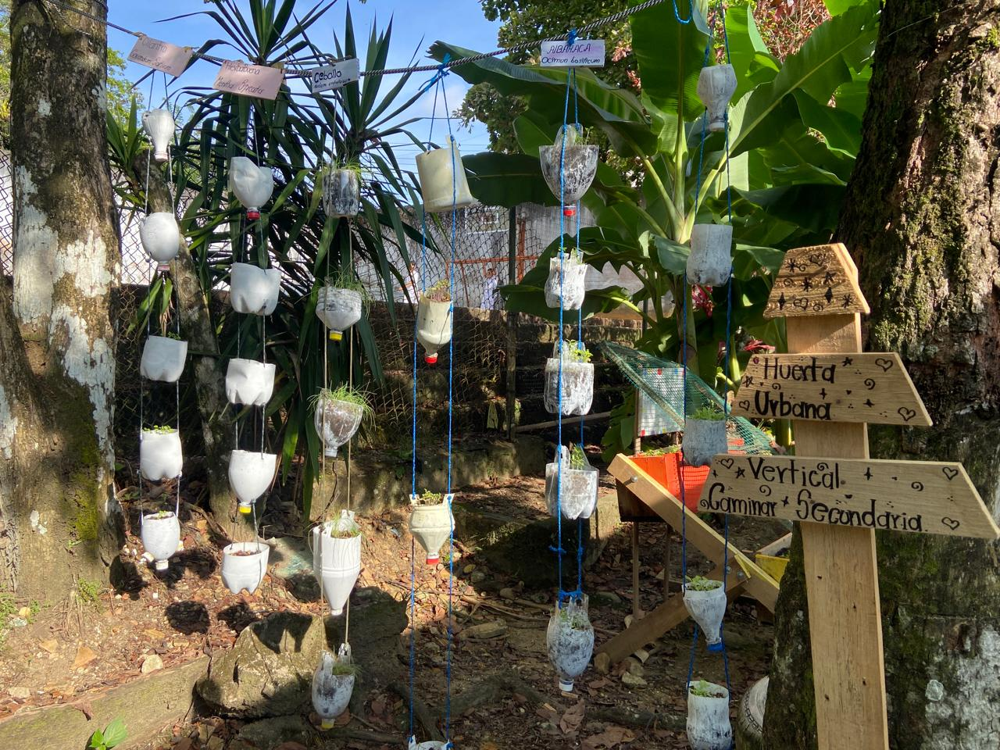
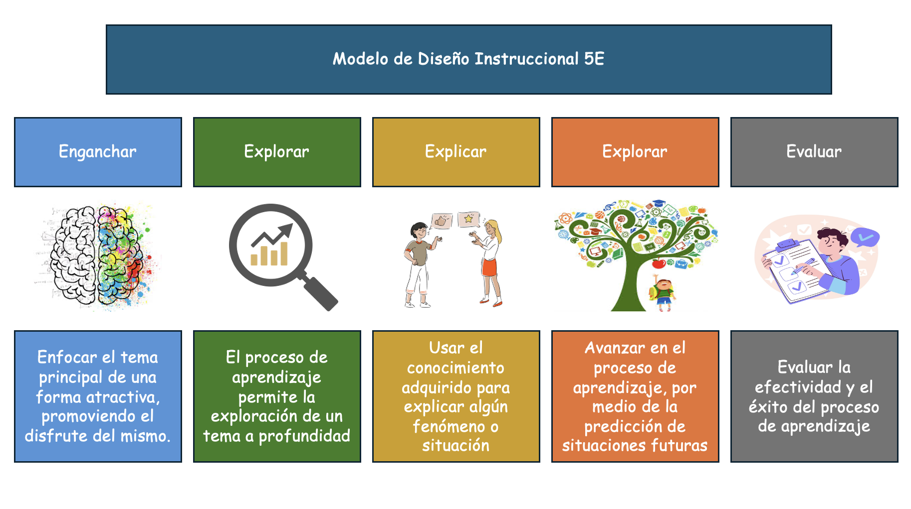

Generalidades

1. Generalidades
Título del Curso
Estrategia pedagógica apoyada en la herramienta digital eXeLearnig para el fortalecimiento de los conocimientos sobre huertas urbanas en los estudiantes de ciclo I del programa Caminar en la Secundaria de la IE los AndesEquipo de trabajo
Cristian Alejandro Cuellar Murcia y Luis Carlos Blanco Millan
Competencia a desarrollar
Ciencias naturales y educación ambiental
- Comprende la relación entre los seres vivos y el ambiente.
- Aplica prácticas de uso responsables de recursos naturales y cuidado del medio ambiente.
- Participa responsablemente en proyectos ambientales escolares.
Tecnología e Informática
- Utiliza herramientas tecnológicas para registrar, organizar y analizar información.
- Aplica las TIC como apoyo a procesos de aprendizaje escolar.
Ciudadanas
- Aplica los procesos de responsabilidad ambiental
- Desarrolla procesos de trabajo colaborativo.
Tiempo estimado para el desarrollo del curso
9 sesiones, con una intensidad total de 16 horas (960 minutos).
Conceptos clave
Abono orgánico: material natural que se obtiene de la descomposición de restos de plantas o alimentos y que sirve para mejorar la fertilidad del suelo.
Agroecología: forma de producir alimentos que busca cuidar el ambiente, el suelo, el agua y los seres vivos, utilizando prácticas naturales y responsables.
Biopreparados: preparaciones hechas con elementos naturales, como plantas o residuos orgánicos, que se usan para nutrir o proteger los cultivos sin productos químicos.
Crecimiento de las plantas: proceso mediante el cual las plantas aumentan su tamaño y se desarrollan gracias al agua, la luz, los nutrientes y el cuidado adecuado.
Conciencia ambiental: capacidad de reconocer que nuestras acciones tienen efectos sobre la naturaleza y de actuar de manera responsable para cuidarla.
Datos: información que se recoge a través de la observación y medición, como la altura de una planta o el tiempo de crecimiento.
Huerta escolar: espacio dentro de la institución educativa donde se siembran y cuidan plantas como parte del proceso de aprendizaje.
Manejo de residuos: acciones que se realizan para clasificar, reducir, reutilizar o reciclar los desechos que se producen en la escuela.
Material orgánico: residuos que provienen de seres vivos, como restos de frutas, verduras o plantas, y que pueden descomponerse naturalmente.
Medición: proceso de comparar una cantidad con una unidad para conocer su tamaño, peso o altura.
Reciclaje: proceso mediante el cual algunos residuos se separan y transforman para darles un nuevo uso y reducir el impacto ambiental.
Seguimiento: observación y registro continuo de los cambios que ocurren en las plantas durante su crecimiento.
Siembra: acción de colocar semillas o plántulas en el suelo o sustrato para que crezcan y se desarrollen.
Sostenibilidad: uso responsable de los recursos naturales para satisfacer las necesidades actuales sin afectar a las futuras generaciones.
Sustrato: mezcla de materiales, como tierra, arena y abono, donde crecen las raíces de las plantas.
Tecnologías de la Información y la Comunicación (TIC): herramientas digitales como celulares, tabletas y aplicaciones que permiten registrar, organizar y analizar información.
Enfoque pedagógico
Se adopta un enfoque constructivista que promueve la participación activa del estudiante en la construcción de su propio conocimiento a partir de la experiencia, apoyado por el uso de herramientas digitales que estimulan una respuesta positiva en el aprendizaje.
Modelo de diseño instruccional
Modelo de diseño instruccional 5E (Engage, Explore, Explain, Elaborate, Evaluate), el cual ofrece un marco estructurado y flexible para la construcción de Recursos Educativos Digitales (RED) en la asignatura de ciencias naturales y medio ambiente, promoviendo un aprendizaje activo, la reflexión crítica y la aplicación práctica de conceptos (Bybee et al., 2006; Pérez, 2016).

Metodología del curso
Metodología mixta que integra actividades presenciales y virtuales para un aprendizaje flexible, apoyado en el uso de tecnologías digitales y recursos educativos digitales.
Tipo de Recurso Educativo Digital
Simuladores y juegos educativos que facilitan la exploración del uso de recursos naturales y el análisis de información en entornos virtuales.